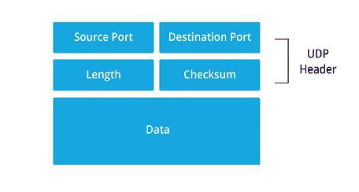

TCP e UDP
Una socket è un'interfaccia di comunicazione che consente lo scambio di dati tra dispositivi attraverso una rete...
Protocollo TCP e UDP:
Caratteristiche e Differenze
TCP (Transmission Control Protocol)

Il TCP è un protocollo orientato alla connessione...
- Affidabilità: Garantisce la consegna senza errori.
- Pipelining: Gestisce la trasmissione per migliorare l'efficienza.
- Controllo di flusso: Adatta la velocità di trasmissione.
- Three-way Handshake: Connessione tramite SYN e ACK.
- Chiusura della connessione: Usa il Four-way Handshake.
Segmenti TCP
- Sliding Window: Regola la dimensione dei dati trasmessi.
- Checksum: Verifica l'integrità dei dati.
- Flags: Gestisce la connessione tramite i flag SYN, ACK, FIN.
- MSS: Determina la dimensione massima dei segmenti.
Problemi del TCP
- Duplicazione a causa di conflitti nei numeri di sequenza.
- Ritardi o perdita di pacchetti per time-out e ritrasmissioni.
- Possibile fallimento nel rilascio della connessione.
UDP (User Datagram Protocol)
L'UDP è un protocollo connectionless, che non garantisce la consegna o l'ordine dei pacchetti...
- Non garantisce la consegna dei pacchetti.
- I pacchetti possono arrivare fuori ordine.
- Non esegue ritrasmissioni in caso di pacchetti persi.
- Vulnerabile agli attacchi DDoS.
Problemi dell'UDP
- Non garantisce il controllo degli errori.
- Pacchetti potrebbero arrivare fuori ordine.
- Non ritrasmette pacchetti persi.
Glossario dei termini